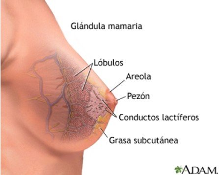

Cáncer de Seno
Las mamas constan de tres partes principales: lobulillos, conductos y tejido conectivo. Los
lobulillos son las glándulas que producen leche. Los conductos son los tubos que transportan la
leche al pezón. El tejido conectivo (formado por tejido fibroso y adiposo) rodea y sostiene
todas las partes de la mama.
El cáncer de mama es una enfermedad en la cual las células de la mama se multiplican sin
control. Existen distintos tipos de cáncer de mama. El tipo de cáncer de mama depende de qué
células de la mama se vuelven cancerosas.
La mayoría de los cánceres de mama comienzan en los conductos o en los lobulillos. El cáncer de
mama puede diseminarse fuera de la mama a través de los vasos sanguíneos y los vasos linfáticos.
Cuando el cáncer de mama se disemina a otras partes del cuerpo, se dice que ha hecho metástasis.

Los tipos comunes de cáncer de mama son:
1.Carcinoma ductal infiltrante. Las células cancerosas se originan en los conductos y después salen de
ellos y se multiplican en otros tejidos mamarios: Estas células cancerosas invasoras también pueden
diseminarse, o formar metástasis, en otras partes del cuerpo.
2.Carcinoma lobulillar infiltrante: Las células cancerosas se originan en los lobulillos y después se
diseminan de los lobulillos a los tejidos mamarios cercanos. Estas células cancerosas invasoras
también pueden diseminarse a otras partes del cuerpo.